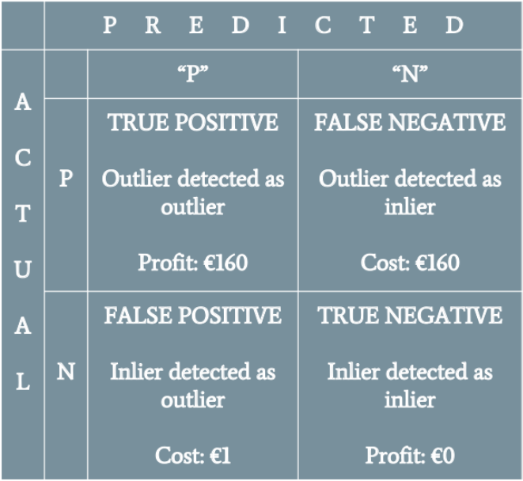

Fraud Detection as a Cost Minimization problem

During the Spring semester of my second year at École des Ponts ParisTech (from February 2018 to May 2018), I worked with three other students on a credit card fraud detection project for Société Générale.
The aim of this project was to realize a comparative study between different outlier detection algorithms to select the one that had the best performances on a credit card fraud dataset. After some research, we decided to focus our study on the following algorithms:
The code is available on my GitHub but has been left uncleaned.
In June 2019, Robin Teuwens shared a kernel on the famous Kaggle Credit Card Fraud Dataset, entitled Fraud Detection as a Cost Optimization Problem (Teuwens changed the name of kernel in August) and proposing an approach very similar to ours.
Indeed, the image at the beginning of this article shows profits and costs we had chosen for the cost function we wanted to minimize for the Societe Generale project, according to the predicted and the real label of a given transaction.
In November 2019, I made some changes to Teuwens' kernel to improve his results, switching the logistic regression to gradient boosted trees algorithms and SMOTE oversampling to ADASYN oversampling.
If I have some time in the next months (but it's unlikely as I switched to new projects), I would like to evaluate the performance of autoencoders on this latest kernel, as we used them for the Societe Generale project and as Teuwens also proposed a kernel using autoencoders.